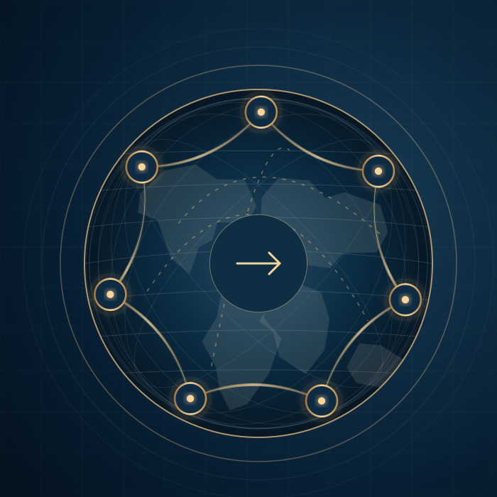

01 / REVENUE
Speed to cash
Order defects and missed activation or billing triggers could postpone the moment a contract became a billable, collectible service.
EXECUTIVE CASE STUDY / GLOBAL REVENUE & SERVICE TRANSFORMATION
Global Order-to-Cash & Service Operations Transformation
As CIO of a global payments technology business, I inherited a difficult challenge: years of acquisitions had left us with disconnected systems, inconsistent processes and different customer experiences across markets. I led a multiyear effort to connect the revenue and service lifecycle, from customer acquisition and contracting through ordering, merchant onboarding, activation, delivery, billing, collections and support.
I set the global process and technology direction, aligned business and regional teams around a common operating model, and led execution through country deployment, cross-system dependencies and post-go-live remediation. The measure of progress was a functioning customer-to-cash journey, not simply a new platform.

ACQUISITION-BUILT COMPLEXITY
Years of acquisitions had accumulated regional workflows, separate applications and local business practices without equivalent end-to-end integration.
A sale could be captured in one system, turned into a contract in another, fulfilled through regional operations, provisioned through specialized platforms and billed by a separate finance process. Every handoff created another opportunity for incomplete data, rework or delayed service activation.
The underlying issue was broader than technology debt. Different countries and legal entities made their own decisions about products, pricing, customer records, invoicing and service support. Some differences were legally necessary. Others reflected the history of the acquired businesses.
My responsibility was to turn those dependencies into one transformation agenda, establish the business priorities and operating direction, and coordinate execution across the teams that owned customer relationships, services and cash.
Order defects and missed activation or billing triggers could postpone the moment a contract became a billable, collectible service.
Manual reentry, fragmented support and local workarounds increased operational effort and made consistent scale harder.
Unreconciled customer, contract, product and payment records complicated reporting, assurance and accountable decision-making.
SEVEN STAGES / ONE CUSTOMER-TO-CASH JOURNEY
I used this end-to-end model to align business owners around the decisions and handoffs that mattered, from a signed customer to an active service, accurate invoice and effective support. Select a stage to see the business challenge, what we proposed to change, and the cross-functional handoffs that had to work.
STAGE 01 / ACQUIRE
Lead, account, partner and opportunity management establish who the customer is, how the relationship is owned and what demand is forecast.
Customer information lived across countries, acquired businesses, channels and partner systems. Duplicate accounts and unclear ownership made it difficult to know which merchant was buying, what was in the pipeline and who should serve them.
Establish a governed customer and merchant identity, consistent lead-to-account definitions, partner attribution and a clean commercial handoff into contracting and finance.
STAGE 02 / CONTRACT
Approved configurations, prices, terms, service commitments and renewal conditions must be unambiguous before fulfillment starts.
Different product catalogs, bespoke pricing, discounts and service promises created deals that were hard to fulfill or bill consistently. Teams often discovered exceptions after signatures.
Standardize offer and pricing architecture, contract templates and approval rules, with structured entitlements and controlled exceptions that downstream order and billing teams can execute.
STAGE 03 / ORDER
Order intake validates the offer, customer, quantities, delivery and billing instructions before transactions enter downstream systems.
Orders arrived through disconnected portals, email, local forms and manual rekeying. Missing legal-entity, tax, device or service data led to rejects, rework and costly handoffs.
Capture a valid order once, validate configuration and payment instructions at entry, route approved exceptions and hand a common order record to logistics, provisioning and finance.
STAGE 04 / ONBOARD
Merchant validation, account creation, processor/gateway configuration, application setup and device or service provisioning bring the sold solution into usable operation.
Merchant activation required coordinated checks, processor or gateway configuration, terminal setup and service permissions. Disconnected teams could leave an approved sale waiting to transact.
Use a common onboarding workflow and integration services to validate the merchant, orchestrate required checks, provision equipment and services, and confirm when the customer is ready to process payments.
STAGE 05 / DELIVER
Prepare, ship, install, track, swap and repair devices, while managing assets, inventory and service readiness.
Shipment and installation systems did not always share a consistent view of inventory, serial numbers, merchant location or contracted service, making it harder to trace assets and trigger accurate billing.
Connect order fulfillment, installed-base records, logistics and field service milestones; use confirmation of delivery, installation and activation as auditable handoffs to billing and support.
STAGE 06 / BILL & PAY
Recurring and usage charges, invoice delivery, accounts receivable, payment settlement, direct debit, collections and reconciliation turn service delivery into financial results.
Recurring fees, usage charges, local taxes, direct debit and invoice delivery crossed multiple legal entities and financial systems. Mismatches created collection delays, credit notes, disputes and manual AR follow-up.
Align billing rules with signed terms and activation data; automate invoice validation and delivery; improve payment matching, aged receivables visibility, exception handling and cash collection accountability.
STAGE 07 / SUPPORT
Case management, contact centers, entitlements, repairs, self-service and service history should provide a complete operational picture after activation.
Support agents often needed to search multiple systems to identify who the customer was, which devices and services were active, and what the contract entitled them to receive.
Connect account, entitlement, installed-base, service history and case data; enable more effective first-contact resolution and feed repeat issues back to product, order and billing owners.
Customer and merchant identity · Product and contract master data · Legal entities · Service entitlements · Audit controls · Integrations · Reporting and accountability
The seven stages connect across applications and business functions. Finance and procurement processes also depended on shared customer, supplier and financial data; they remained part of the wider enterprise architecture.
VOICE OF THE CUSTOMER
I wanted the external journey to challenge assumptions made in internal workflow diagrams. A processed order is not a useful outcome if the merchant cannot transact, track delivery, resolve a problem or understand the invoice.
“Can I order the right service once, with confidence?”
Offer and price clarity, complete intake, reliable tracking and ownership.
“When will it actually work?”
Merchant, processor, device and service provisioning through activation.
“Will the bill be correct?”
Contract terms, recurring and usage triggers, invoices and payment matching.
“Who can solve the problem?”
Entitlement visibility, first-contact resolution, complaints and handoffs.
Complaint themes, service contacts, satisfaction indicators, abandonment and first-call resolution were useful diagnostic inputs. A regional diagnostic report provides a dated regional example of these signals, not a measured global improvement attributable to the transformation.
FROM DIAGNOSIS TO BLUEPRINT
I led the effort to align business and IT teams around a common process and data blueprint across countries, legal entities and channels. That required difficult decisions about which local practices were essential and which had been inherited through acquisitions.
Define decisions and accountable owners across acquisition, ordering, fulfillment, activation, billing and service, instead of assigning only application owners.
Align customer, merchant, product, service, contract and financial-entity definitions. Control the handoffs between system records.
Separate local tax, invoice, payment, language and regulatory obligations from inherited practices that no longer need to remain different.
Use business workshops, integration tests, conversion rehearsals and local sign-off to challenge assumptions in the common template.
WHAT CHANGES FOR THE CFO, THE CUSTOMER AND THE BUSINESS
The commercial case was straightforward: reduce the friction between winning a customer, delivering a working payment service, invoicing correctly and collecting cash. For a CFO, those handoffs affect revenue timing, working capital, operating cost and the customer relationships behind future growth.
A correct order and a shorter merchant-activation path can reduce time between contract acceptance, usable service and billable activity.
Accurate invoice data, timely delivery and effective payment matching can reduce overdue balances, disputed charges and collection delays.
Standard transactions and fewer manual touches reduce the effort spent correcting orders, reconciling invoices and answering avoidable questions.
When fulfillment, billing and support share the same service record, customers spend less time repeating information or resolving conflicting answers.
FOLLOW ONE ORDER THROUGH THE BUSINESS
Capture a valid product, contract, entity and payment instruction once.
Provision the merchant and equipment, verify activation and establish the billable service date.
Calculate charges against the correct entitlement, recipient, tax and billing cycle.
Send the invoice, match payments, follow up on exceptions and resolve any disputes with traceable evidence.
These are operating measures to establish and review, not reported results or promises of a specific percentage improvement.
| Business measure | What it tells us | How to measure it | Accountable owner |
|---|---|---|---|
| Order-to-activation time | How quickly a signed order becomes a working, billable service | Median days from accepted order to confirmed activation; show by market and product | Merchant Operations |
| First-pass order quality | How many orders can flow without correction or manual intervention | Orders completed without rework ÷ total accepted orders | Commercial / Order Operations |
| Invoice first-pass accuracy | Whether billing matches service, contract, tax and customer data | Invoices issued without correction or credit/rebill ÷ all invoices | Finance / Billing |
| Days sales outstanding (DSO) | How efficiently invoiced revenue turns into cash | Average trade accounts receivable ÷ credit sales × days in period; compare like-for-like | Finance / AR |
| Aged AR and dispute backlog | Which balances are late, blocked or disputed | Receivables over 30/60/90 days; number and value of open billing disputes | Collections / Country Finance |
| Cost-to-serve and repeat contacts | Whether streamlined processes lower service effort | Handling cost per transaction; repeat contacts due to ordering, provisioning or billing | Service / Operations |
A smaller dispute queue is an operational result. Lower aged receivables or lower collection effort is a financial result. Both matter, but they need separate measures. No unverified company-wide savings, DSO reductions or support-volume percentages are asserted.
TWO COMPLEMENTARY TRANSFORMATIONS
I managed two related but distinct agendas: improving the hosting foundation and reshaping the business transactions running across enterprise systems. Neither was a substitute for fixing ownership, data or the customer journey.
The modernization direction, as I recall it, was to move away from aging on-premises enterprise application hosting toward an Oracle Cloud Infrastructure IaaS model.
Business rationale: lifecycle management, resilience, refresh avoidance and a more sustainable hosting foundation.
Implementation extent, dates, migrated systems and measured cost or resilience benefits still require corroborating records.
The business transformation drew on Salesforce CRM and service tools, Oracle E-Business Suite, Merchant Onboarding Portal (MOP), onboarding APIs, device and service platforms, integration services and analytics.
Business rationale: better transaction continuity, service activation, billing accuracy, customer experience and operational control.
The architecture evolved by market and date; it was not one universally deployed final system landscape.
Both tracks depended on secure, reliable data exchange and accountable operating processes. An Oracle EBS application hosted on IaaS is not an Oracle Fusion Cloud ERP SaaS implementation.
MAVERICK / DIRECT-TO-MERCHANT
I saw high-volume Direct-to-Merchant ordering as a practical test of our standardization strategy. The proposed automation had to validate offers, merchants and devices before moving work downstream, rather than simply digitizing manual steps.
PLAN A / PROPOSED AUTOMATED PATH
The proposed design described a new merchant experience with connected ordering, validation and provisioning across customer, order, device and financial systems.
A target design. Full production adoption and automation rates have not been verified.
PLAN B / PROPOSED ASSISTED FALLBACK
When a market, product, acquiring arrangement or integration was not ready, existing forms and manual provisioning could preserve controlled execution.
A fallback in the documented roadmap, not evidence that every exception was resolved.
Incomplete merchant data, local configurations and unconnected entitlement or billing triggers would create downstream failure even if the first form was digital. The durable value lay in a reusable process, clear exceptions and reliable handoffs. The final Plan A/Plan B adoption mix remains unverified.
ONE OPERATING MODEL / MULTIPLE ENTITIES, MARKETS AND SERVICE LINES
A global revenue transformation cannot succeed as a collection of isolated IT go-lives. It requires one business blueprint, local regulatory and commercial decisions, integrated transaction testing, careful cutovers and sustained support. My role was to connect that broader plan to business priorities and maintain momentum across the participating teams.
Different legal entities, acquired operations, offerings, merchant channels, payment methods, invoicing rules, taxes and service-delivery partners needed a common transaction design without erasing legitimate local needs.
Common process ownership and master data; transparent exception decisions; a reusable technology template; wave-specific testing, migration and readiness; stabilization before the next expansion.
Document how the business sells, contracts, orders, activates, delivers, bills, collects and supports today. Expose duplicate steps, regional variants, system gaps, manual touches and control failures.
Agree common product, customer, merchant, contract and legal-entity data; design decision rights and approval paths; explicitly document which tax, payment, regulatory and language variations remain local.
Connect CRM, merchant onboarding, enterprise order management, logistics, service activation, invoicing, AR and support. Define a shared order and activation state, monitoring and reconciliation controls.
Walk representative orders from signed contract to active merchant, accurate invoice, payment receipt and support case. Include returns, failed direct debits, credit/rebill, refunds, device swaps and complex legal entities.
Sequence deployment according to readiness and dependency, not geography alone. Migrate and reconcile records, train local teams, manage cutover and use explicit go/no-go criteria across billing, cash and support.
Use dedicated hypercare, invoice and payment reconciliation, incident triage and daily exception reviews. Fix broken handoffs before calling the wave complete or accelerating the next rollout.
Use Finance and operations measures to verify faster onboarding, accurate invoices, receivable aging, support effort and cost-to-serve. Feed lessons into the common template and future market priorities.
This enterprise-level view combines documented activities from the program with an end-to-end implementation framework informed by established consulting practice. It is not a claim that every market followed the identical sequence, achieved full completion or delivered identical financial benefits.
External cross-check: McKinsey's end-to-end quote-to-cash design, Bain's Results Delivery approach and PwC's value-realization governance each reinforce standardization, business ownership, staged execution, adoption and Finance-led measurement. These are independent reference points, not consulting engagements on this project.
McKinsey: Quote-to-Cash ↗Bain: Results Delivery ↗PwC / Strategy&: Value Realization ↗BLACKJACK / ONE VERSION OF PROGRAM HEALTH
An enterprise transformation dashboard should allow the CFO, executive team and board to answer four questions at a glance: Are we delivering the promised capabilities? Is cost and value on plan? What has changed since the last review? What decision is required now?
EXECUTIVE TRANSFORMATION REPORT
Illustrative management view based on the principles of BlackJack status reporting.
| Workstream | Current | Trend | What leadership needs to know | Next control |
|---|---|---|---|---|
| Global process & master data | GREEN | → steady | Common customer, contract and product rules approved for the current design scope. | Local exceptions and data-owner sign-off |
| Order & merchant onboarding | AMBER | ↘ changed | Additional validation and processor dependencies affect the next integration gate. | Resolve and retest affected scenarios |
| Fulfillment & service activation | GREEN | → steady | Normal flow tested; exception handling remains part of acceptance criteria. | Prove serial, asset and entitlement matching |
| Billing, AR & cash | RED | ↘ escalated | Invoice and payment reconciliation evidence is a deployment gate, not an afterthought. | Finance-backed go/no-go decision |
| Data migration & integrations | AMBER | ↗ recovering | Cross-system conversion and reconciliation need additional confirmation. | Complete end-to-end regression |
| Adoption, support & hypercare | GREY | ◦ pending | Operational adoption and support readiness must be signed off for the wave. | Training, support model, service transition |
Require joint Finance and operations evidence for invoice correctness, payment collection, merchant activation and support readiness. Record the accountable executive, recovery options, cost implication and next decision deadline.
NEXT REVIEW · Open actions, status movement, spend and value movement
All colored statuses and descriptions above are deliberately fabricated examples, not copied historical BlackJack ratings or actual company budgets. The design illustrates an executive reporting discipline: one consolidated view of RAG health, movement since prior review, ownership, milestone evidence, cost, forecast value, dependencies and decisions.
I emphasized facts behind the color. A green software release with unpaid invoices, inactive merchants or unresolved service cases was not a green business outcome. Program review had to connect the milestone, customer impact, Finance exposure and the person accountable for the next action.
LESSONS LEARNED
The practical challenges were ownership, conversion quality, country readiness, financial validation and the customer experience after cutover. They shaped how I think about transformation beyond this program.
Digitizing a poor process only moves defects faster. Agree the offering, rules and exceptions first.
Protect genuine statutory and market needs; challenge inherited differences that add support cost without value.
Customer, contract, entitlement, pricing and payment data must be owned and reconciled before and after release.
Finance and country leaders must validate requirements and decisions. IT cannot substitute for their accountability.
Common templates, decision rights and a clearly accountable owner for global versus local design reduce drift.
System integration testing and UAT must reach device readiness, invoice distribution, banking, returns and reconciliation.
Use pilots, manageable country waves, proven cutover criteria and an honest readiness decision.
Hypercare, complaint handling, remediation and adoption are transformation work, not cleanup outside the project.
Track milestones through operational evidence to independently validated net benefit, not projected savings alone.
Infrastructure hosting and process transformation should reinforce each other, while retaining distinct measures of success.
FROM DESIGN TO DELIVERY
I led a multiyear effort to turn a fragmented customer-to-cash process into a coordinated transformation program. We advanced standardized commercial and merchant onboarding workflows, moved country operations onto an integrated transaction foundation, and delivered concrete improvements in billing, collections processing and exception controls.
We brought customer acquisition, contracts, orders, activation, fulfillment, billing and support into one operating framework, with clearer dependencies and shared process direction across teams and markets.
The transformation advanced standardized ordering, merchant validation and provisioning designs to reduce unnecessary manual handoffs and make high-volume onboarding easier to scale.
Following country go-live, teams corrected contract and invoice issues, improved invoice delivery monitoring and addressed direct-debit processing. These were tangible changes to the process of billing and collecting cash.
Improved invoice delivery, master-data corrections, payment exception reporting and reconciliation addressed underlying causes of AR follow-up, billing corrections and avoidable customer disputes.
We connected customer feedback, entitlements, service readiness and order visibility to the design, reducing reliance on siloed handoffs as the path toward more effective support and fewer repeat issues.
A completed implementation milestone followed by specific invoice, contract, payment and process remediation activities.
BlackJack reporting exposed changing milestones, dependencies and decisions, while the program coordinated business and technology teams across regional waves.
The historical record confirms specific deployments, operational corrections and a global transformation strategy. Faster onboarding, lower outstanding receivables, reduced dispute volume and fewer support contacts are part of the business-value narrative, but enterprise-wide before-and-after measurements have not yet been independently validated. No unsupported financial totals or performance percentages are presented here.
The lasting value wasn't simply moving transactions between systems. It was building a more connected way to acquire customers, activate services, turn that activity into cash, and support the people depending on us.